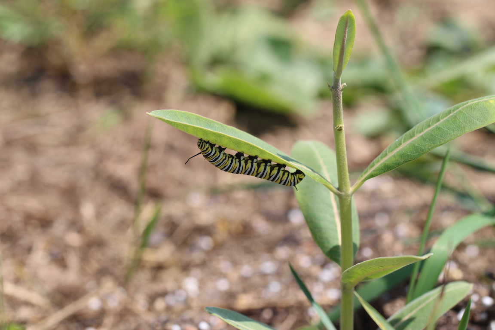

Below are links to our main sampling protocols. Collaborators should have access to our shared Drive folder which has the most up-to-date versions and additional information. Please get in touch if you need access to our shared Drive folder.
HerbVar Species & Site Selection Plan. This describes our approach to select plant species and/or sites to survey. In brief, we suggest collaborators strive to survey either (1) one of our three focal species (Taraxacum officinale, Plantago lanceolata, and Plantago major) in a novel geographic/environmental context, (2) new clades or growth forms of species in our five focal families (Apocynaceae, Asteraceae, Fabaceae, Rubiaceae, and Solanaceae), or (3) reproductive tissue damage of any species.
HerbVar Motivation and Project Goals. This document describes the larger strategic vision and project goals of the HerbVar Network.
HerbVar Primary Protocol. This is the primary protocol for HerbVar surveys. We designed this to work for most plant species and sites. If it will not work for your species or site for whatever reason, then please consider one of our alternative protocols or get in touch with the HerbVar Planning Group.
Reproductive Damage Protocol. If your plants have reproductive tissues (flowers, fruits, seeds), please follow this protocol to quantify damage to these tissues.
Datasheet - Excel File. This Excel file is a template datasheet designed to work for the HerbVar Primary Protocol. It contains a “data dictionary” sheet that defines all columns if any abbreviations are unclear.
Datasheet - Printable PDFs. We have split the printable datasheets into three parts, one each for the Primary, Reproductive, and Herbivore Protocols. The herbivore datasheet is built for you to print as many copies of the second page as you have identified herbivore groups.
To upload data, please visit our data submission portal and be sure to use the template Excel file linked above.
Damage Estimation Guidelines. This is a detailed walk through the process of estimating herbivore damage on leaves and whole plants, including tips for different types of leaves and damage.
Illustrated Guide to Percent Leaf Damage. This is a visual guide to what different levels of percent damage look like on a leaf. We suggest printing this out and taking it to the field with you to aid in estimation of percent herbivory. Currently, it has leaves of two species, but more are on the way.
Low Density/Abundance Protocol. If your plants are rare at your site—such that they occur at low densities or abundances—then please refer to this protocol.
Cacti and Other Succulents Protocol. This document discusses issues related to quantifying herbivory on cacti and other succulents and outlines a protocol.
Mature Tree Protocol. This is a protocol for surveying mature trees for HerbVar. It also discusses how to handle seedlings and saplings of tree species. If you are sampling tree species in their seedling or sapling stage (i.e., <2m tall) please refer to the Primary Protocol
Rhizomatous Geophyte Protocol. This is a protocol for rhizomatous species for which it is feasible to determine what constitutes a genet by identifying rhizomatous connections and for which genets are small enough that herbivory could feasibly be estimated on 30 genets and their nearest neighbors within a site.
Insect Sampling Protocol. This document discusses whether and how to sample insects. All surveys should note internally-feeding herbivores (e.g., gallers and miners), but only some should take the extra time to sample external herbivores. The document also includes visual cheatsheets for pre-selected groups of insects and gall/mine counting.
